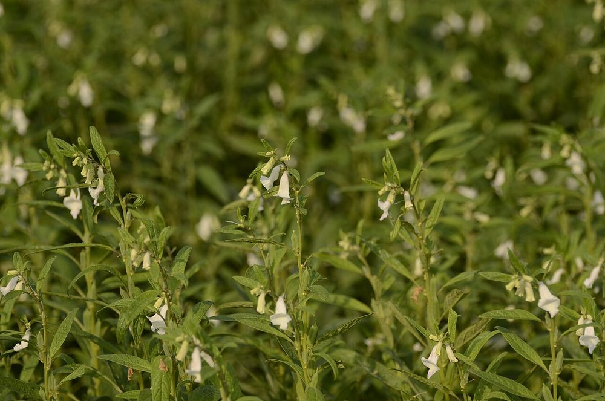

Culture vivrière
Sésame
Oléagineux d'export
- Cycle 90 à 110 jours
- Mise à jour 2026-10-21
- Niveau de confiance partiel

Présentation et utilisations
Oléagineux destiné à l'huile, à la pâtisserie et à l'export. Le point critique n'est pas la production mais la récolte : les capsules s'ouvrent et laissent tomber les graines si l'on attend trop.
Climat et sols
Chaleur, bon ensoleillement, sols légers et drainés. Sensible à l'excès d'eau et à l'engorgement racinaire.
Variétés adaptées
Choisir en priorité des variétés à capsules non déhiscentes (qui ne s'ouvrent pas seules) : c'est le premier critère de réussite pour une récolte mécanisable ou même manuelle. Les noms disponibles localement ne sont pas documentés ici.
Calendrier cultural
Semis en saison des pluies installée ; récolte 3 à 4 mois plus tard, dès que les capsules jaunissent et que les premières graines se détachent.
Préparation du terrain
Labour léger, sol fin et nivelé. Éviter les parcelles qui gardent l'eau.
Semis et plantation
Semis en lignes, peu profond (la graine est petite), avec un espacement permettant le sarclage. Un semis trop profond compromet la levée.
Entretien, fertilisation, irrigation
Sarclages précoces, la culture étant lente à couvrir le sol au début. Éviter les excès d'azote qui favorisent la végétation au détriment des capsules.
Engrais : quoi, combien, quand
Le sésame valorise mieux un sol correctement pourvu en phosphore. Un excès d'azote produit de la tige et peu de capsules.
| Apport | Dose | Quand | Comment |
|---|---|---|---|
| OrganiqueCompost | 5 t/ha | Avant le semis | Incorporé au labour |
| MinéralAzote (N) | 25 à 50 kg/ha | 1/2 au semis, 1/2 à la floraison | Épandu entre les rangs |
| MinéralPhosphore (P2O5) | 20 à 40 kg/ha | Au semis | Localisé à côté de la graine |
Doses par hectare de culture pure, à ajuster selon l'analyse de sol. Sans analyse, rester dans la fourchette basse et fractionner l'azote : c'est le geste qui évite de brûler la culture et de payer un engrais qui ne sera pas valorisé.
Maladies, ravageurs et prévention
Surveiller les chenilles défoliatrices et les maladies de tige en fin de saison humide. La rotation et l'élimination des résidus limitent la pression. Seuils non documentés ici.
Récolte et post-récolte
Récolte dès maturité, par poignées, en coupant les tiges et en les mettant à sécher sur bâche. Ne jamais laisser les capsules s'ouvrir au champ : la perte peut être totale.
Conservation et transformation
Séchage sur bâche, battage doux, vannage, stockage au sec. La propreté du lot (absence de sable, d'humidité) détermine le prix à l'export.
Coûts, rendements et débouchés
Débouchés : huile, pâtisserie, export. Le prix dépend fortement de la qualité du lot. Aucun prix vérifié ici. Postes de dépense : semence, sarclages, bâches de séchage, main-d'œuvre de récolte.
Tutoriel étape par étape
- 1. Choisir une variété non déhiscente
Demandez une variété qui ne s'ouvre pas toute seule (dite non déhiscente) ; sinon, récoltez très tôt et acceptez des pertes.
- 2. Préparer et semer
Terre fine, semez peu profond en lignes, assez espacé pour passer la houe entre les rangs.

PJeganathan · CC BY-SA 4.0 · Wikimedia Commons - 3. Sarcler tôt
Deux sarclages, avant que la culture ne couvre le sol.
- 4. Récolter au bon moment
Coupez dès que les capsules jaunissent, faites des bottes sur une bâche et laissez sécher.
- 5. Battre et nettoyer
Battez doucement, vannez, mettez en sacs propres et secs : un lot propre se vend mieux.
Sources, vérification et limites
- Base de connaissances interne · knowledge/agronomie.md, knowledge/techniques_agricoles.md (consulté le 2026-10-21)
Limites de cette fiche. Variétés et rendements non documentés. Le prix à l'export n'est pas vérifié : ne pas annoncer de revenu sans contrat ou relevé réel.
Dernière mise à jour : 2026-10-21. Les prix, rendements et calendriers locaux ne sont mentionnés que lorsqu'ils sont documentés ; dans le doute, la fiche le dit.